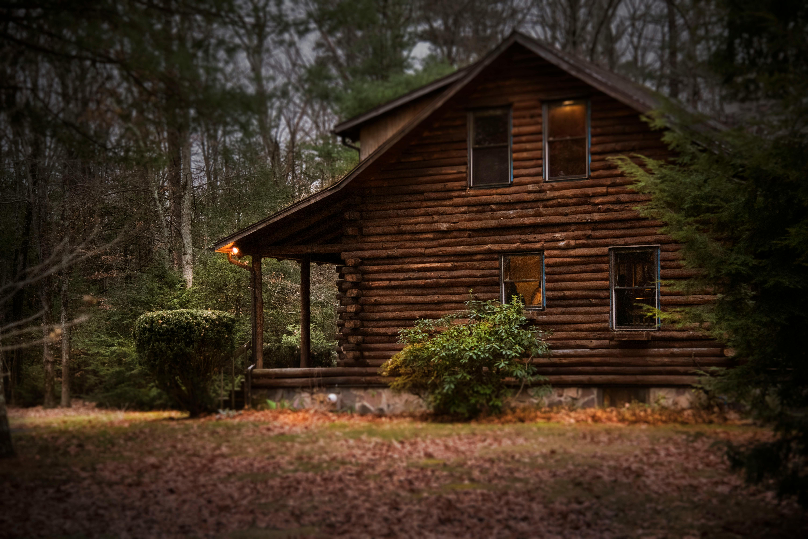

Welcome to our website dedicated to promoting a
healthy lifestyle and spiritual balance.
Whether you're seeking practical tips for nourishing your body,
spiritual insights to nourish your soul, or inspiration to fuel your
purpose, you'll find it here. Join us as we embark on a transformative
odyssey towards wholeness and meaning. Step into a realm where every
click brings you closer to a healthier, happier, and more spiritually
enriched existence. Welcome to your oasis of wellness and enlightenment.
Explore yourself
"Embark on a flavorful expedition of self-discovery through the realm of
wholesome cuisine. Discover the delightful harmony between nourishment
and indulgence as you explore the tantalizing world of healthy eating.
From crisp, garden-fresh salads to succulent grilled vegetables, every
dish is crafted to entice your taste buds and nourish your body from
within. Savor the vibrant colors, aromatic spices, and exquisite flavors
that transform each meal into a celebration of wellness and vitality.
With every bite, you'll not only satisfy your cravings but also reaffirm
the profound importance of relishing delicious, nutritious food that
truly delights the senses."
Benefits of living in nature enviroment

We found evidence for associations between nature exposure and
improved cognitive function, brain activity, blood pressure, mental
health, physical activity, and sleep. Results from experimental
studies provide evidence of protective effects of exposure to natural
environments on mental health outcomes and cognitive function.
Cross-sectional observational studies provide evidence of positive
associations between nature exposure and increased levels of physical
activity and decreased risk of cardiovascular disease, and
longitudinal observational studies are beginning to assess long-term
effects of nature exposure on depression, anxiety, cognitive function,
and chronic disease.
see more...